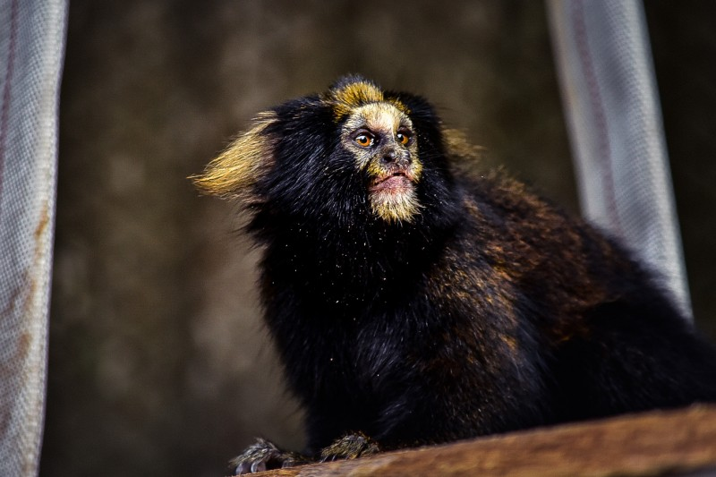
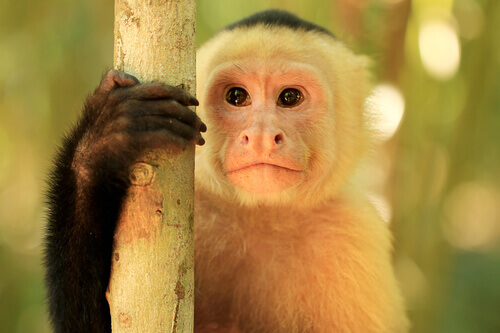
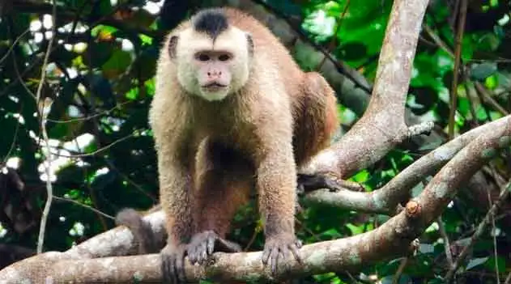
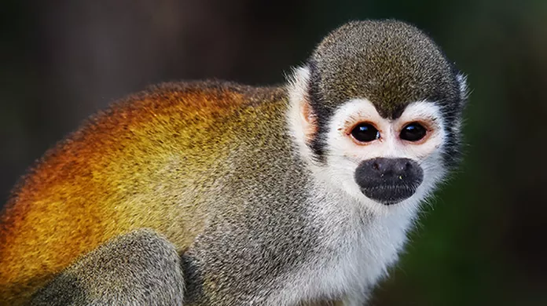
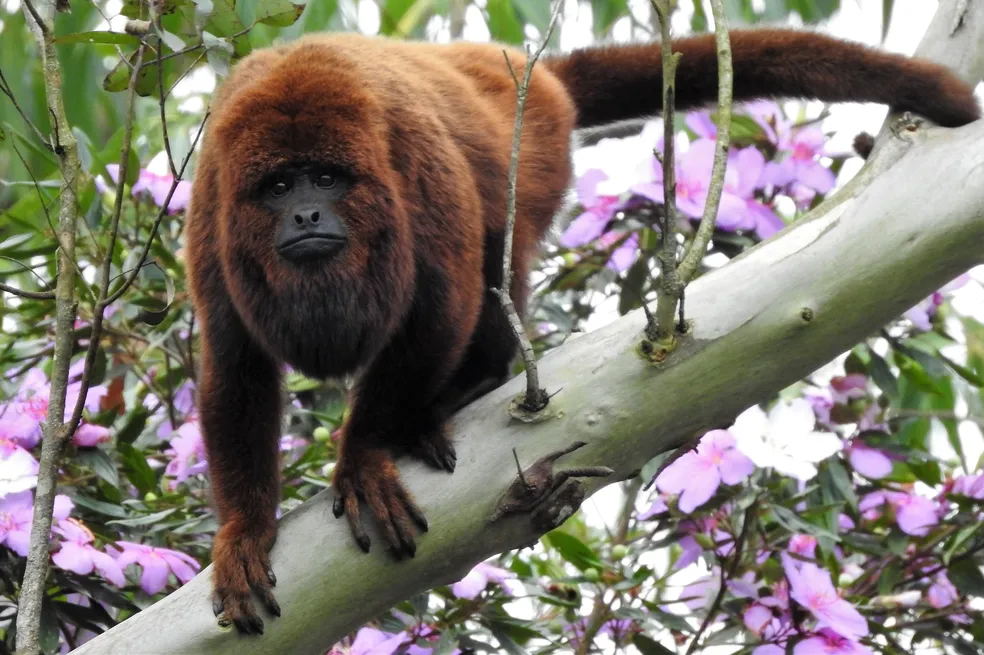
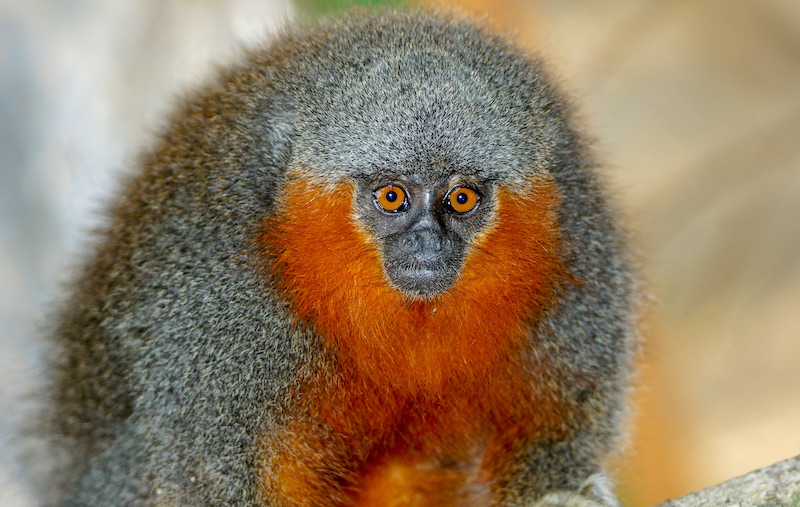
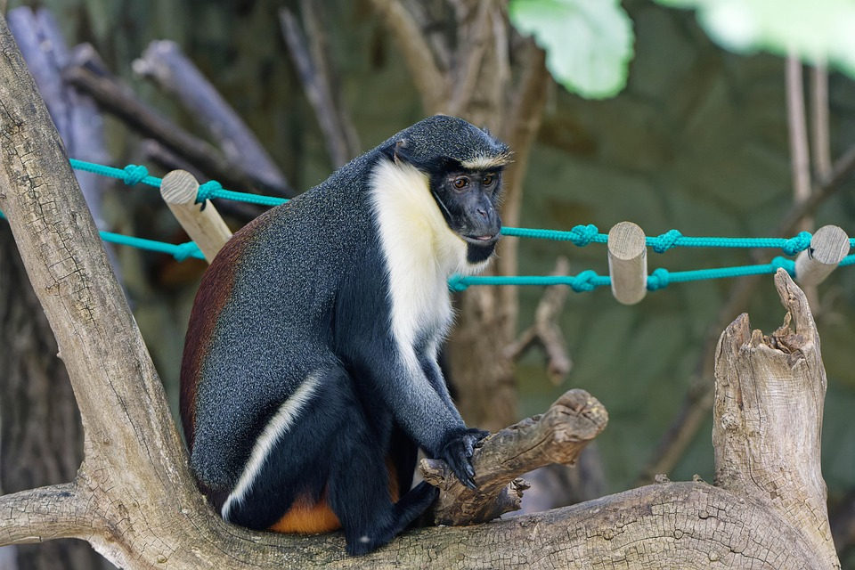
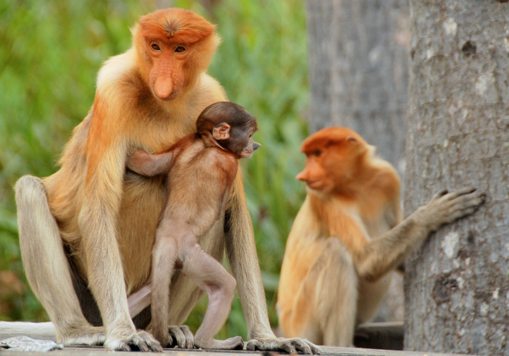
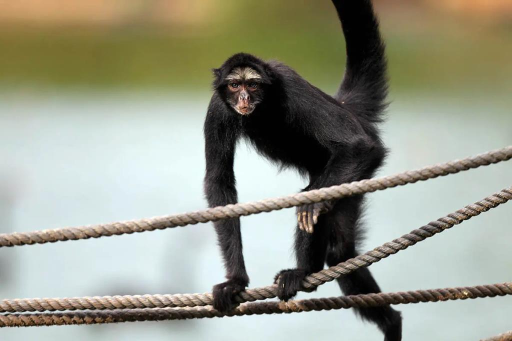

Macacos de Pequeno Porte
Sagui-da-serra-escuro (Callithrix aurita)

Tamanho: 20–25 cm (corpo) + 35 cm (cauda)
Peso: 300–400 g
Pelagem escura com tufos auriculares brancos
Habitat: Mata Atlântica (RJ, SP, MG)
Dieta: Onívoro
Comportamento: Vive em grupos de até 15, muito ágil
Macaco-prego-dourado

Tamanho: 40 cm (mais a cauda)
Peso: 2,5–4 kg
Pelagem amarelada com topete
Habitat: Mata Atlântica do Nordeste
Dieta: Onívoro
Conservação: Criticamente ameaçado
Macaco-prego-de-ka'apor

Pequeno, claro e expressivo
Dieta: Onívoro
Comportamento: Inteligente, curioso, social
Contribui com a dispersão de sementes
Macaco-de-cheiro-de-cabeça-preta

Peso: 650–1.100 g
Pelagem amarelada e máscara facial
Comportamento: Altamente social e vocal
Dieta: Frutas, insetos, néctar
Habitat: Florestas tropicais da América do Sul
Bugio-marrom-do-norte

Peso: Machos 6–9 kg, Fêmeas 4,5–6,5 kg
Pelagem marrom-avermelhada, rugidos altos
Habitat: Mata Atlântica do Nordeste
Dieta: Folhas e frutas
Comportamento: Territorial, vocal e calmo
Zogue-zogue-de-Alta Floresta

Peso: 600–900 g
Pelagem cinza-avermelhada
Habitat: Alta Floresta (MT)
Comportamento: Monogâmico e territorial
Dieta: Frutas, folhas, sementes
Macacos de Médio Porte
Macaco-Roloway

Peso: Machos 5–7 kg, Fêmeas 4–5 kg
Barba branca, cauda longa, pelagem preta
Habitat: Costa do Marfim e Gana
Dieta: Frutas, folhas, insetos
Conservação: Menos de 200 indivíduos vivos
Macaco-narigudo-de-Tonkin

Peso: Machos 11–14 kg, Fêmeas 7–10 kg
Nariz achatado, pelagem cinza
Habitat: Montanhas do Vietnã
Dieta: Folhas, frutas, sementes
Curiosidade: Um dos mais raros do mundo
Macaco-de-cauda-de-porco

Peso: Machos 7–14 kg, Fêmeas 4–7 kg
Cauda curta e enrolada
Habitat: Sudeste Asiático
Dieta: Frutas, ovos, insetos
Curiosidade: Treinado para colher cocos
Macaco-aranha-de-cara-branca

Peso: 6–9 kg
Pelagem preta, rosto branco em anel
Habitat: Amazônia brasileira
Dieta: Frutas, folhas
Curiosidade: Raramente desce ao solo